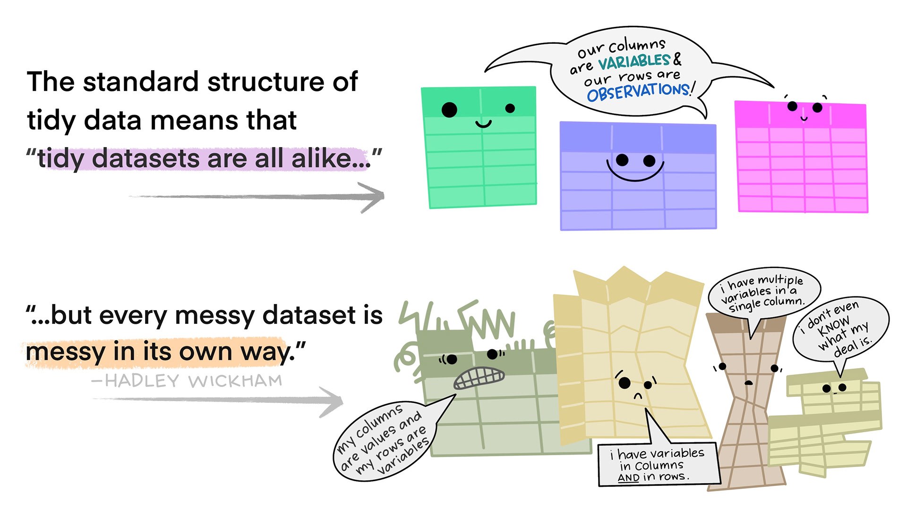
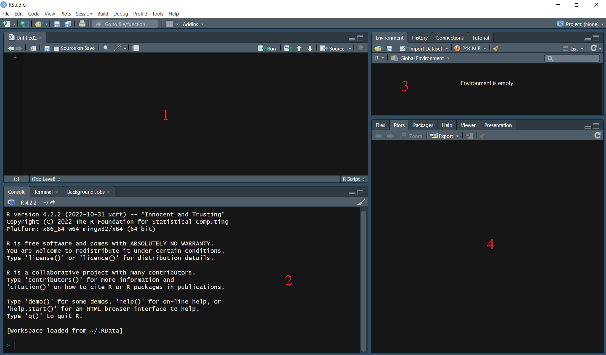

value_1 <- 1Introduction I
class notes
Why should data science be critical?
Quantitative analysis can be a very powerful tool to understand systemic phenomena. By translating similar experiences shared by large groups of people into data, we can identify repeating patterns. This allows us to contextualize our personal experiences and address issues from a systemic perspective1, leading to more effective solutions and positive change for ourselves and the communities we are a part of.
However, data are not neutral or objective. They are the products of unequal social relations, and understanding this context is essential for conducting accurate, ethical analysis.
It is important to critically analyze data in order to avoid replicating the biases that may be inherent in the data. Standard practices in data science may serve to reinforce these existing inequalities (D’ignazio and Klein 2023).
Biases and “objectivity”
The demographics of data science, as well as related occupations such as software engineering and artificial intelligence research, are not representative of the population as a whole. The vast majority of individuals working in these fields are elite white men.
It is important to keep in mind that science is shaped by the unique perspectives of individual scientists, and therefore researchers’ subjectivities and biases can influence the way data sets are built and later analyzed. Therefore, it is necessary to be transparent about the context in which research is conducted as well as potential sources of bias, thus acknowledging the partiality of our perspectives.
The following example illustrates the biases that may result from the work of non-diverse groups. A Ghanaian-American graduate student at MIT, Joy Buolamwini, experienced a problem when working on a class project using facial-analysis software, as the software could not detect her face but had no problem detecting the faces of her lighter-skinned collaborators. She discovered that the system’s facial recognition features worked perfectly when she put on a white mask. Later, she found the data set on which many of facial-recognition algorithms are tested contains 78 percent male faces and 84 percent white faces (D’ignazio and Klein 2023).
What gets counted and what doesn’t?
Data that could be used to address critical social issues may be missing2, but powerful institutions may also create databases and data systems through excessive surveillance of marginalized groups.
Having more data on a subject may not always have a positive impact. The paradox of exposure illustrates the complexity of this matter. This term describes a paradoxical situation in which individuals who have the most to gain from being counted or classified are also the most vulnerable to the potential dangers posed by that very act of counting or classifying. For example: undocumented immigrants are less likely to complete the census questionnaire due to fear of deportation, which leads to undercounting in the census. This results in less political representation and federal funding being allocated to these groups, and therefore less voting power and fewer resources for them (D’ignazio and Klein 2023).
Furthermore, the effectiveness of data analysis in addressing societal issues is heavily influenced by the quality of the input data. In this regard, it is fundamental to analyze which variables are selected, as well as their categories. A clear example of this challenge is racial classification: while it can help understanding and fighting racial stratification, it can also be used to preserve it. The interpretation and impact of these types of variables on data analysis are dependent on various factors, such as the role of critical or intersectional perspectives within research teams, the causal theories guiding the empirical analysis or the contextualized or decontextualized nature of the interpretation of results. Therefore, racial data can play a crucial role in addressing racial inequality, but this does not mean every statistic should be presented racially. In fact, some racial statistics have contributed to racial conflict by implying that race determines behavior (Zuberi 2001).
Working with data
The first step for working with data is data tidying: structuring data sets in a standarized way. A well prepared data set will simplify the data analysis process and help us avoid common mistakes.
Tidy data is a standard way of mapping the meaning of a data set to its structure3. In tidy data (Wickham 2014):
Every column is a variable.
Every row is an observation.
Every cell is a single value.

To manipulate these tidy data sets we code: we write instructions that enable the machine or software to process our data precisely as we require. Programming languages provide us with a structured framework for communicating to the computer the specific actions to be executed or the methods by which to carry them out in order to meet our specific needs.
A second fundamental principle when working with data is making your code easy to understand (for your future self or others). Writing a readable code will make it reusable: comments and documentation are fundamental to show the decisions you made, the limitations of your code, etc.4 (Benureau and Rougier 2018).
Working with R
Why R?
R is an open source software, which means that anyone can use, modify, and distribute it without cost. Additionally, R can easily be integrated with other programming languages (such as Python).
R has a wide variety of functions that make it easy to import, manipulate, and analyze data. It is particularly useful for statistical analysis, data visualization, and machine learning.
It also has a large and active community of developers who contribute to the language and create useful packages (and who can help and support you when you encounter problems or have questions about the language!).
The basics
We will be using RStudio, an integrated development environment (IDE) designed to work with R (or Python).
The RStudio layout5:

When working with R, the code is typically written in the source pane (1), although it is also possible to write code directly into the console (2). However, it is important to note that any code written in the console will not be saved.
To execute a line (or lines) of code, simply select the code chunk and press Ctrl + Enter (Windows) or Command + Return (Mac). It is also possible to run all the code on the file using the Source command (top right).
The results of the executed code are displayed in the console (2).
The environment pane (3) displays currently imported and created R objects.
The output pane (4) displays the generated plots, file tabs, packages, and help information. The basic command to find out what a function does or simply ask for help is help(“function name”) or ?(“function name”).
To modify the appearance of the execution environment, such as changing the colors or switching to “dark mode”, use Tools > Global Options > Appearance6.
To create a new script to work on, you can click on File > New File > R Script, or use the keyboard shortcut Ctrl + Shift + N (Windows) or Shift + Command + N (Mac)7.
Keep in mind that objects created in R are not automatically saved on your computer. Specific functions must be used depending on the object type and the desired format for exporting it (e.g.: .xlsx tables, .png plots, etc.).
For more information on RStudio’s panes, visit this site
RStudio also has a feature called projects, which is a way of compartmentalizing your R code and keeping all the files associated with a project together — input data, R scripts, analytical results, figures. Each project is linked to a working directory, which is the folder where R searches when loading and saving files89. Keep in mind that file paths will be expressed in relation to the project’s location on the computer, but it’s also possible to specify absolute paths (from the C: or D: drive of our computer).
You can create an RStudio project using File > New Project:
In a brand new directory
In an existing directory where you already have R code and data
By cloning a version control (Git or Subversion) repository
This action will create a project file (with an .Rproj extension), which you can later open in order to open your project.
Structuring a project
A good practice to structure a project directory is keeping your input, code and outputs in separate folders. Folder and file names should always be descriptive and easy to remember. For example:
my_project/
data/
code/
results/
report/
This folder arrangement will simplify the file import and export process.
Final general setup advice
By default, R will save your environment to a .RData file after you quit a session and reload it when you start a new session. This is not recommended because it might delay start-up, or even generate an endless crash cycle if a previous session crashed. It might also make your work harder to reproduce. To change this setting, got to: Tools > Global Options > General, and untick “Restore .RData into workspace at startup” and select the option “Never” for “Save workspace to .RData on exit:”.
R will also save a log of all commands entered into the console during an R session in a .Rhistory file. To change this setting untick the “Always save history (even when not saving .RData)” option in the same menu.
File types: .R and .Rmd
- .R files contain plain code that can be executed by R (including commands you create objects, transform them, create visualizations, save objects, etc.).
When should we use .R files?
.R files are useful to carry out the first steps of our data-processing workflow: importing and exploring the data base, and starting to designing the elements we will use to communicate our results (tables, graphs, etc.).
- .Rmd files integrate the R and Markdown languages10. Markdown is a markup language for creating formatted text using a plain-text editor with simple, unobtrusive syntax.11
When should we use .Rmd files?
.Rmd files are designed to contain your code and also the narrative surrounding the data. Therefore, they facilitate teamwork and are also useful to communicate our results.

Why use RMarkdown?(Alzahawi 2021)
Avoid the common errors (and time consumed) that result from analyzing data using a different software from the one used to communicate your results (no more copy/pasting and/or reformatting all results after every modification!). All results and citations in your reports will be automatically updated after any modification.
Improve your team-work and code reproducibility by using a report structure specially designed for you to clearly explain your methodology and result interpretation as you navigate your way through the data analysis process.
Some arguments against RMarkdown:
- The learning curve can be steep.
- Barriers to collaborating with others: all your team must be able to use R/RMarkdown (and additional tools such as GitHub).
Packages
In R, the fundamental unit of shareable code is the package. A package bundles together code, data, documentation, and tests, and is easy to share with others. As of March 2023, there were over 19,000 packages available on the Comprehensive R Archive Network, or CRAN, the public clearing house for R packages (Wickham 2023).
Why are packages useful?
Someone has probably already solved the problem you’re working on, and you can benefit from their work by downloading their package12.
R syntax
Before we start coding, some general rules about the R language13:
R is case-sensitive: variable1 and VARIABLE1 will be interpreted as two different objects.
Whitespaces and new lines: R will ignore whitespaces and new lines inside an expression, using them to delimit expressions only in case of ambiguity. If an expression can terminate at the end of the line the parser will assume it does so. Neutral new lines will be useful to make our code easier to understand.
Comments in our code should be preceded by #. Otherwise, every line we write will be evaluated as a line of code. Comments will be useful to explain our code to future users.
Operators
Assignment
Assignment operators are used to define objects, that is, to assign them a value.
->: Right assignment
<-: Left assignment
=: Left assignment
For left (right) assignment operators, the name of the object should be placed to the left (right) of the operator, while the definition of the object should be placed to the right (left). For example:
When an object is defined in R, it is saved in the program’s environment and can be accessed and used later in the code. When running a line with the name of an object, its content is displayed in the console.
value_1 1It is important to keep in mind that if an object is defined with the same name as a previously existing object, the latter replaces the former.
value_1 <- 1
value_1 <- 2
value_1 2Relational
Relational operators are used to describe relationships between objects, which are expressed as true (TRUE) or false (FALSE)14.
>: Greater than
>=: Greater than or equal to
<: Less than
<=: Less than or equal to
==: Equal to
!=: Not-equal to
For example:
4==5 FALSE4==4 TRUE4>=5 FALSELogical
Logical operators are used to combine logical expressions.
!: Not
&: And
|: Or
Considering the examples mentioned above, these are some of the expressions we can create combining them:
4==5 & 4==4 FALSE4==5 | 4==4 TRUE4==5 | !(4==4) FALSEArithmetic
Some of R’s basic arithmetic operators:
+: Plus
-: Minus
*: Multiplication
/: Division
^: Exponentiation
Example of usage:
(4+4)*8 64Combinations!
Operators can be combined to create increasingly complex expressions:
(2*8 == 4^2 | 3*3 <= 2^3) & 3 != 2 TRUER objects
While R objects might appear somewhat abstract at this point, we will delve into specific examples during the guided practice to provide a clearer understanding.
Values
Values in R are the smallest objects, which will be used as building blocks for everything else. The main value types are:
“numeric” for any numerical value (such as 3.5, -.4).
“character” for text values, denoted by using quotes around a value (for example: “x” or ‘x’). They can include any printable character (for example: “a”, “Hi!” or “#2.5%jk%?”).
“logical” for TRUE and FALSE (the Boolean data type).
“integer” for integer numbers (the qualifier L at the end of a number indicates to R that it’s an integer, for example: 4L).
“complex” to represent complex numbers with real and imaginary parts (such as 2i or 3+8i).
Vectors
A vector is a set of values of the same class. There may be numeric, character, etc. vectors. To create a vector, we use the c() command (which stands for ‘combine’).
A special case is the factor type vectors. They are generally used for ordinal data. That is, for a qualitative variable for which we need to establish a certain order in its possible values.
Data Frames
A data frame is a two-dimensional data structure or table, where each column represents a variable, and each row represents an observation. Data frames can contain data of different classes.
It can be considered as a set of equally sized vectors, where each vector (column) should contain data of the same type. However, the classes of vectors that make up the table can be different. Therefore, each observation (row) can be composed of data that can be of different types.
Data frames are a fundamental object in the R programming language, as they are the most commonly used structure for data analysis. Data frames are also typically used for loading external data into the R environment and for exporting the results of our work.
Lists
A list is a collection of objects of any type, including other lists, data frames, vectors, or individual values. While a vector contains values of a single type, a data frame contains vectors of different types. Similarly, a list can contain data frames, but can also contain other lists, vectors, or individual values, all at the same time. Lists are a flexible and powerful data structure in R that can be used to organize complex and diverse data.
References
Alzahawi, Shilaan. 2021. “Writing Reproducible Manuscripts in R.”
Benureau, Fabien C. Y., and Nicolas P. Rougier. 2018. “Re-Run, Repeat, Reproduce, Reuse, Replicate: Transforming Code into Scientific Contributions.” Frontiers in Neuroinformatics 11 (January): 69. https://doi.org/10.3389/fninf.2017.00069.
D’ignazio, Catherine, and Lauren F. Klein. 2023. Data Feminism. S.l.: MIT PRESS.
Wickham, Hadley. 2014. “Tidy Data.” Journal of Statistical Software 59 (10). https://doi.org/10.18637/jss.v059.i10.
———. 2023. R PACKAGES: Organize, Test, Document, and Share Your Code. S.l.: O’REILLY MEDIA.
Zuberi, Tukufu. 2001. Thicker Than Blood: How Racial Statistics Lie. Minneapolis: University of Minnesota Press.
Footnotes
Is data enough? In 2015, communications researcher Candice Lanius wrote a widely shared blog post, Fact Check: Your Demand for Statistical Proof is Racist in which she summarizes the ample research on how those in positions of power accept anecdotal evidence from those like themselves, but demand endless statistics from minoritized groups. In those cases, she argues, more data will never be enough.↩︎
“The Library of Missing Datasets is a physical repository of those things that have been excluded in a society where so much is collected. The word missing is used to imply both a lack and an ought: something does not exist, but it should.”↩︎
Here you can find some suggestions on how to write more readable code.↩︎
It is possible to change the default location of the panes.↩︎
For more keyboard shortcuts got to: Help > Keyboard Shortcuts Help. Note that Mac and Windows users have different shortcuts.↩︎
When we position ourselves between the quotation marks that define the location for searching or saving a file, pressing Tab in R will reveal the documents or folders residing within the folder we are actively working in. It’s always a good practice to search for files or folders in this manner instead of manually typing their names in order to prevent errors.↩︎
These class notes were written using an .Rmd file!↩︎
How can I find the package I’m looking for? https://cran.r-project.org/web/views/↩︎
For a more exhaustive description of the R language, visit this site.↩︎
Remember R is case-sensitive!↩︎